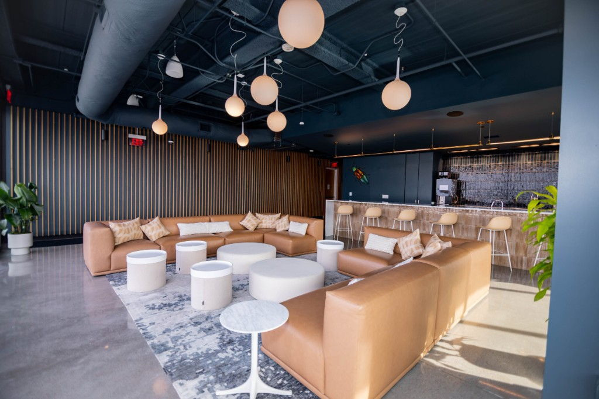

Don Wisdom, President of Datalink Networks, welcomes attendees and frames the day’s themes across AI, cloud, and cybersecurity—setting context for main-stage and breakout sessions with Microsoft, TD SYNNEX, and ecosystem partners.
Don Wisdom — President, Datalink Networks.
